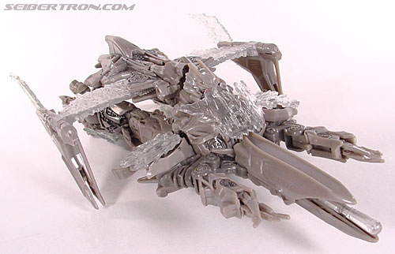
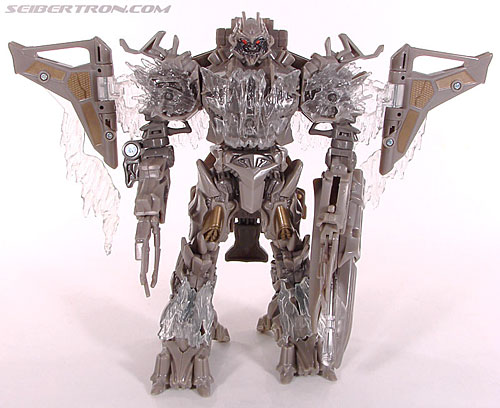
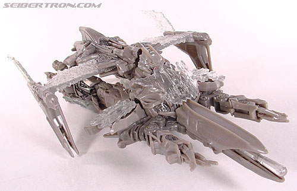
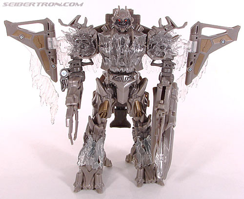
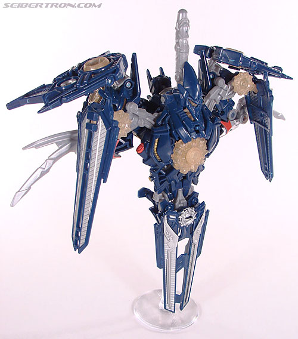
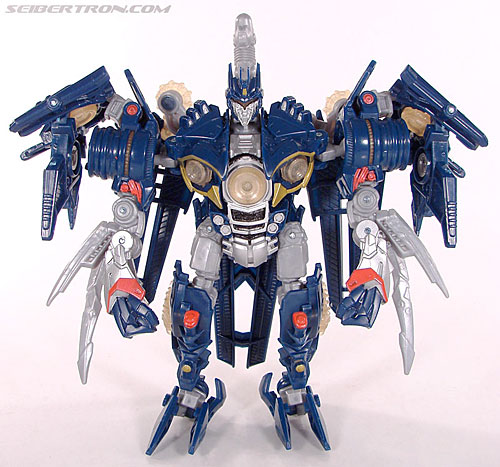

Megatron
Megatron
 
Allegiance : Decepticon
Size: Voyager
Difficulty of Transformation : Easy
Color Scheme : Gray, clear plastic, and some metallic dull copper, silver, light red, and charcoal black
Individual Rating : 6.6
Gathering
at Nemesis (Toys "R" Us Exclusive)
Price : $50 U.S.
(NOTE: Because this set is composed of repaints,
this is not a full-blown review. This mainly covers any changes made to
the set and the color scheme, and merely compares it to the original versions
of these molds. For a review on TF1 Voyager Megatron, the mold used for
Megatron, go
here
. For a review on mass-release
RotF deluxe Soundwave, the mold used for Soundwave, go
here
.
For a review on mass-release RotF voyager The Fallen, the mold used for
The Fallen, go
here
.)
Megatron


Allegiance
: Decepticon
Size:
Voyager
Difficulty of Transformation
: Easy
Color Scheme
: Gray, clear plastic,
and some metallic dull copper, silver, light red, and charcoal black
Individual Rating
: 6.6
Megatron here has a pretty
TF1-accurate color scheme, though that doesn't work in his favor much here.
Gray and clear plastic doesn't exactly catch the eye, and the gray is just
a REALLY dull, boring color. The clear plastic used for the "ice" looks
quite nice, and the copper and black paint wash used on a few pieces such
as the legs looks quite well, Unfortunately, it's still not enough-- he's
basically
Premium Voyager Megatron
without
the sweet super-metallic paint all over everything. If you can't pick up
the Premium voyager for a decent price, this is probably my next-recommended--
but it's not that great of a mold to begin with.
No mold changes have
been made to Gathering at Nemesis Megatron.
Soundwave


Allegiance
: Decepticon
Size
: Deluxe
Difficulty of Transformation
: Easy
Color Scheme
: Light milky gray,
dark blue, transparent pale yellow, and some light red, silver, and dull
goldish yellow
Individual Rating
: 7.5
This is the only one
of the bunch that I would call a genuine "repaint" as opposed to a slight
modification or just re-release. Soundwave here has been done up in more
G1-esque colors, with dark blue now being a main color in addition to the
light milky gray. Although I still think the gray is horribly dull, the
dark blue really contrasts quite well with it, and the light red paint
apps in places pretty much identical to where they were on the
G1
figure
is a nice little accent as well. The silver paint agains the
blue also works magnificently. I'm not so sure about the odd pale yellow
color used for the transparent plastic, as it's a really weird shade--
almost like it's made of solid superglue-- but it does contrast well with
the blue. Overall I'd say it's definitely a visual improvement over the
mass-release version.
No mold changes have been made to Gathering at Nemesis
Soundwave.
The
Fallen
Allegiance
: Decepticon
Size
: Voyager
Difficulty of Transformation
: Easy
Color Scheme
: Dark forest green
and some transparent red, moderately light gray, metallic gunmetal gray,
and light orange
Rating
: 6.3
The Fallen in this set is identical to the mass-release version. No changes at all here.
It's little wonder the Gathering at Nemesis set is a huge shelf-warmer at Toys "R" Us. It's not really much of a discount at all compared to getting the figures individually, and only one is an actual (quite good) redeco, while the others are re-releases or ever-so-slight modifications of previous color schemes. Plus all three are mediocre-at-best molds with no real Earth "alt modes" to speak of, really limited the appeal of this set. If you don't have any of these molds and have no problem with the robot modes taking such a precedence over the alt modes, this might be easier then getting them individually, but otherwise this is an easy skip for all but the most hardcore completists.
Reviews by Beastbot
(Pics taken from Seibertron.com .)